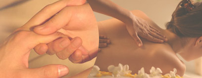

Please Call To Schedule An Appointment: 206-940-6124
Licensed Massage Practitioner
Seattle - Bellevue Massage Healing Arts
Two Essential Therapies Locations
Cascadia Wellness Clinic
2320 130th Ave NE Bldg E Ste 120
Bellevue, WA 98005
Securities Building
1904 3rd Ave. #608
Seattle, WA. 98101
Locations

The Benefits of Massage Therapy
Experts estimate that 90% of disease is stress related.
Studies have shown massage therapy:
- reduces heart rate and blood pressure
- boosts the bodies immune system functioning
- increases the body’s natural killer cells activity
- reduces pain
- enhances sleep quality
- pumps oxygen and nutrients into tissues and vital organs: improving circulation
- improves range of motion and joint flexibility
- eases medication dependence
- stimulates lymph flow
- helps athletes' prepare and recover from strenuous workouts
- improves the condition of the bodies largest organ – the skin
- lessens depression and anxiety
- promotes tissue regeneration: reducing scar tissue and stretch marks
- reduces post surgery adhesions and inflammation
- reduces spasm and cramping
- releases endorphins: amino acid that works as the body’s natural pain killer
- relieves migraine pain
Source: Associated Bodywork & Massage Professionals
Review clinical research studies examining the benefits of massage at www.pubmed.gov.